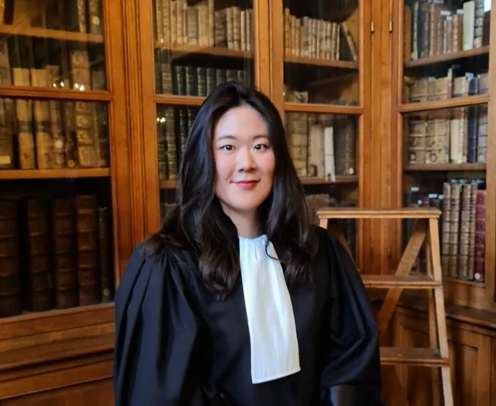
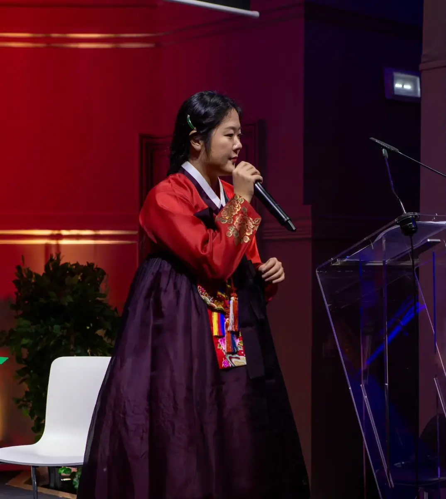
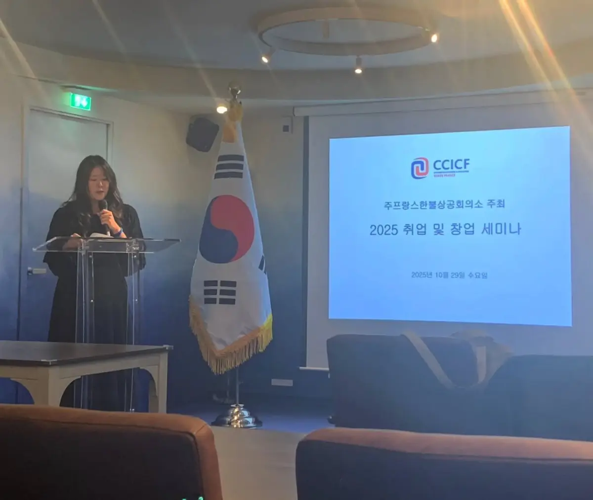
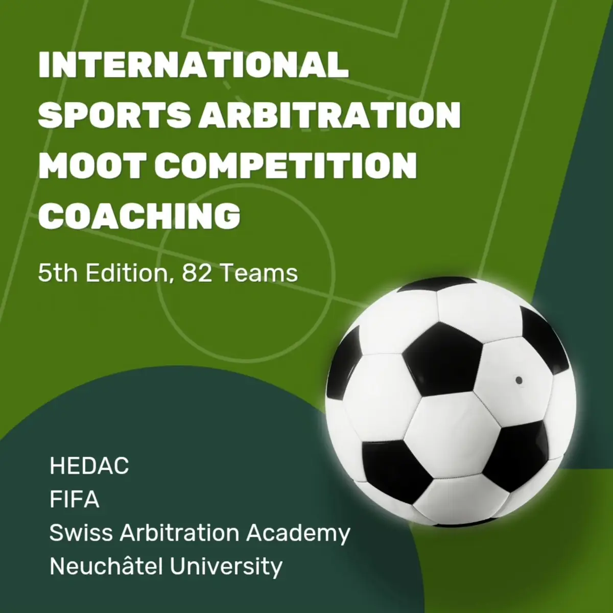
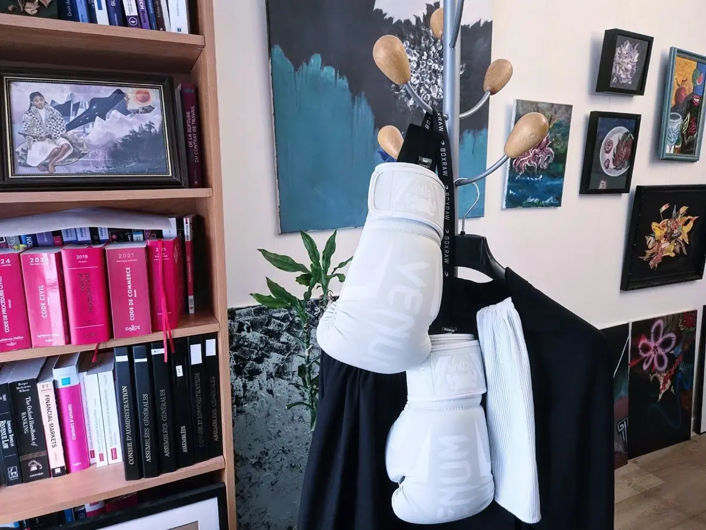

Habbine Estelle Kim
International lawyer | Paris & New York Bars
French of South Korean origin, Habbine is a dual-qualified lawyer admitted to the Paris and New York Bars.
She worked in the Legal & Compliance (European HQ) Department of Samsung Electronics UK on EU competition and commercial law matters, and as a Korean Document Reviewer at Morae Global Corporation (previously Clutch Group) on a complex global investigation involving a financial services company. Her experience further includes dispute resolution and corporate M&A at Bird & Bird ATMD (Singapore), Yulchon (South Korea) and Alerion (France).
She is a graduate of University College London (LLB) and Université Paris 1 Panthéon-Sorbonne (Masters in Law, Economics and Management, EU Law).
Cross-border work
Habbine advises multinational corporations, SMEs and start-ups on contentious and non-contentious matters arising from cross-border projects and business operations across Europe, Asia and the US.
She represents clients in domestic and cross-border disputes, including commercial, civil, employment and intellectual property litigation before French courts (Tribunal judiciaire, Tribunal de commerce, Conseil de prud’hommes and Cour d’appel), as well as in international arbitration under the rules of the ICC, the Korean Commercial Arbitration Board (KCAB) and the Court of Arbitration for Sport (CAS).
She also advises on international business expansion, investments and market entry, with a focus on corporate, contractual and regulatory matters: corporate governance, restructuring, EU compliance, employment, distribution, commercial contracts, consumer law and data protection.
Employment
Employment and service contracts, restructuring, dismissal and redundancy, harassment, discrimination, settlements.
Litigation
Civil, commercial, IP and labour disputes before the Tribunal judiciaire, Tribunal de commerce, Prud’hommes and Cour d’appel.
Arbitration
ICC and KCAB proceedings, and sports law before the CAS (Ad Hoc, Appeal and Anti-Doping Divisions).
Commercial
Distribution, unfair competition and parasitism, consumer law, EPR, IP protection, terms of sale, debt recovery.
Corporate
Company formation and dissolution, TUP, annual accounts, business transfers, restructuring and governance.
Contracts
Drafting, translation and risk analysis: employment, international commercial, JV and partnership agreements, leases.
Compliance
Representation during investigations and controls in regulated sectors: F&B, energy, construction, airports, transport.
Legal advice
Day-to-day legal assistance to start-ups, SMEs and multinationals expanding into Europe.
Technology & AI · Fashion & Luxury · Beauty & Cosmetics · Healthcare & Life Sciences · Medical Devices · Automotive · E-commerce & Digital · Food & Beverage · Distribution & Retail · Construction · Art · Entertainment · Digital identity · Aviation & Defence · Engineering & Architecture · Energy · Sport · Transport · Hospitality
Education
- Governance & challenges of public and private healthcare institutions
- Medical liability before administrative, civil and criminal courts
- ADR: regional conciliation and compensation commissions (CCI)
- Expert reports in medical liability litigation
- Disciplinary proceedings before professional medical bodies
- Involuntary treatment and end-of-life care
- Internship at AP-HP hospitals: Saint-Antoine, Hôtel-Dieu, Paul Brousse, Lariboisière, Necker
Nomination
Show all (6)Show less
Honours
Show all (5)Show less
Association
Show all (5)Show less
Pro bono
Show all (5)Show less
Credentials
Show all (7)Show less
Languages
French · English · Korean · Spanish
Achievements & interests
Show all (9)Show less
Beyond the bar



